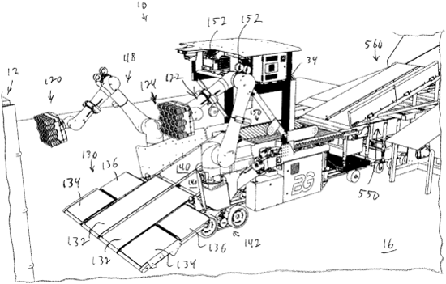
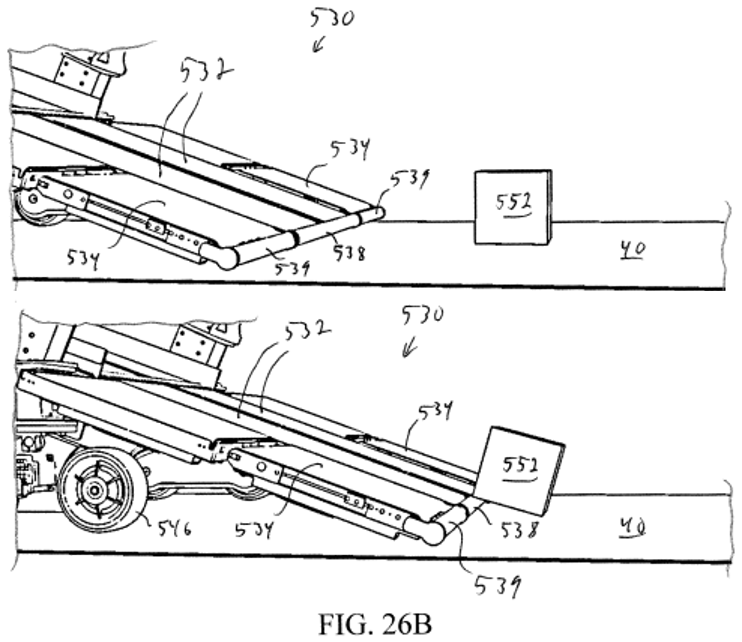
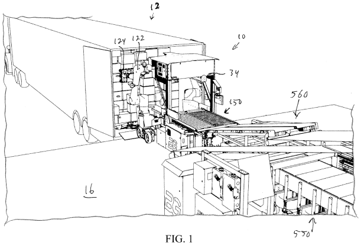

Berkshire Grey / SoftBank Robotics
Scoop — System Architecture
Role & Scope
Technical lead and hands-on hardware engineer from early prototype through commercial deployment.
System Architecture
Defined the product from the ground up — conceptualizing major components and shaping hardware and software functionality.
Commercial Deployment
Deployed with multiple Fortune 50 customers at various locations throughout the U.S.

Engineering Problem
- Interface a full trailer-width robotic unloading system with narrower downstream conveyors.
- Induct heavy packages from the floor without requiring a separate lifting mechanism.

Conveyor Layout
Devised a compact conveyor system to funnel packages from the full trailer width into the narrower takeaway path.

Package Scooping
Designed a high-torque nose-roller drivetrain and custom wheel system to lift heavy packages as the system advances.

System Packaging
Architected the chassis and conveyor arrangement to fit the robotic unloading system within the constrained dock area.